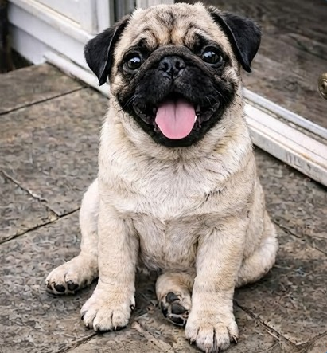
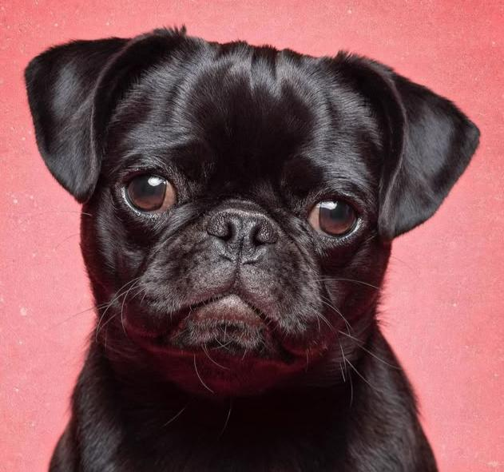
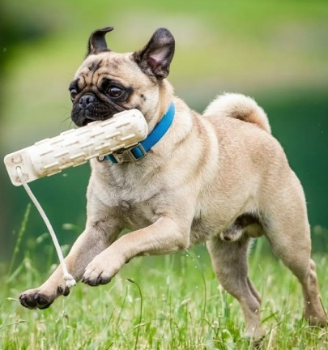
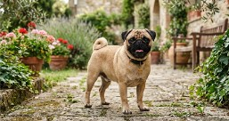
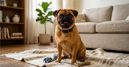

Carlino
Il Carlino è uno dei cani da compagnia più antichi, riconoscibili e amati al mondo, famoso per il suo musetto schiacciato, le rughe espressive e la coda arricciata. Nato come cane nobile nella Cina imperiale, è un vero e proprio concentrato di simpatia, dolcezza e affetto.
Con il suo carattere equilibrato e le sue buffe espressioni, è il compagno ideale per chi cerca un amico fedele da vivere pienamente in casa.
Caratteristiche
Tempo e Routine

Richiede passeggiate brevi e ritmi tranquilli.
Cura e Impegno
Attenzione costante alle pieghe del muso e agli occhi.
Valutazione dello spazio
Perfetto per la vita in appartamento.
Maggiori informazioni
Tempo e Routine
Non ha un elevato bisogno di esercizio fisico sostenuto, ma necessita comunque di movimento quotidiano e di stimoli per passeggiate brevi. Evitare corse o uscite intense nelle ore estive calde per via della sua conformazione brachicefala, preferendo momenti di gioco moderato in casa.
Cura e Impegno
La toelettatura del mantello è mediamente semplice, ma perde pelo durante tutto l'anno. Richiede cure costanti e quotidiane: soprattutto pulizia e asciugatura meticolosa delle pieghe del muso per prevenire infezioni cutanee e controllo regolare degli occhi.
Valutazione dello spazio
È il classico cane da compagnia compatto, poco rumoroso e non incline ad abbaiare senza motivo. Si adatta in maniera perfetta ad appartamenti di qualsiasi dimensione e ama stare sul divano a contatto con le persone di casa.
Pro e Contro
✓ Per chi è ideale
- Perfetto per l'appartamento
- Eccellente carattere in famiglia
- Cura del pelo semplice
▲ Cosa tenere a mente
- Sensibilità al caldo
- Igiene delle pieghe del muso
- Tendenza all'aumento di peso
Momenti ed espressioni



Palette di colori

